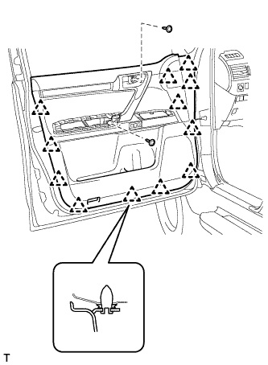

SIDE AIRBAG SENSOR > INSTALLATION |
| 1. INSTALL SIDE AIRBAG SENSOR ASSEMBLY LH |
Turn the engine switch off.
Disconnect the cable from the negative (-) battery terminal.
| Condition | Waiting Time |
| Vehicle enrolled in G-BOOK system | 6 minutes |
| Vehicle not enrolled in G-BOOK system | 1 minute |
Install the side airbag sensor with the bolt.
Check that the side airbag sensor is not loose.
Connect the connector.
| 2. INSTALL FRONT DOOR INNER GLASS WEATHERSTRIP LH |
 |
Install the front door inner glass weatherstrip.
| 3. INSTALL FRONT DOOR TRIM BOARD SUB-ASSEMBLY LH |
 |
Connect the front door lock remote control cable assembly and front door inside locking cable assembly.
Connect 2 connectors.
 |
Attach the front door trim board sub-assembly by attaching the 4 claws of the front door inner glass weatherstrip as shown in the illustration.
|  |
Attach the 12 clips and front door trim board retainer to install the front door trim board sub-assembly.
Install the 3 screws.
| 4. INSTALL MULTIPLEX NETWORK MASTER SWITCH ASSEMBLY |
Connect the connector.
Attach the 2 clips, 4 claws and guide to install the power window regulator master switch assembly with front door armrest base panel.
| 5. INSTALL FRONT ARMREST ASSEMBLY LH |
Attach the 7 claws and 7 guides to install the front armrest assembly.
| 6. INSTALL FRONT DOOR INSIDE HANDLE BEZEL PLUG LH |
Attach the 3 claws to install the front door inside handle bezel plug.
| 7. INSTALL FRONT DOOR LOWER FRAME BRACKET GARNISH LH |
Attach the 2 claws to install the front door lower frame bracket garnish.
| 8. CONNECT CABLE TO NEGATIVE BATTERY TERMINAL |
| 9. CHECK SRS WARNING LIGHT |
Check the SRS warning light (Click here).